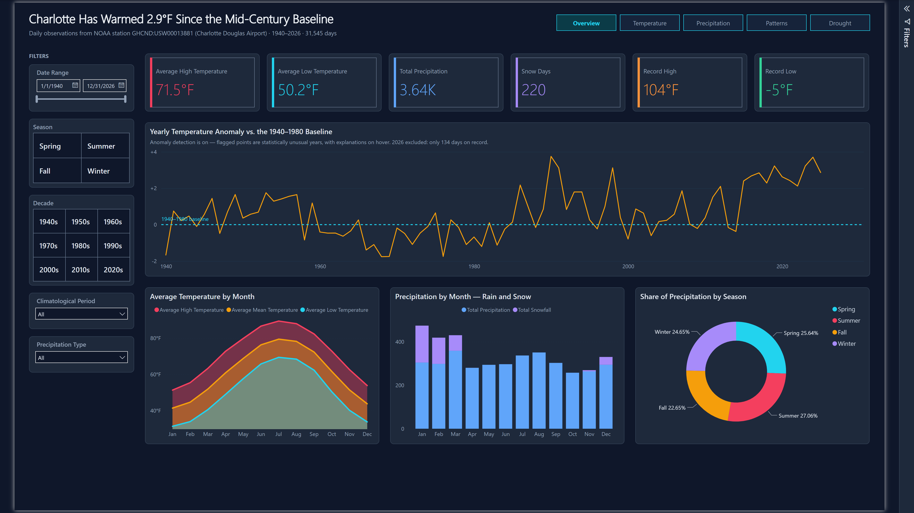
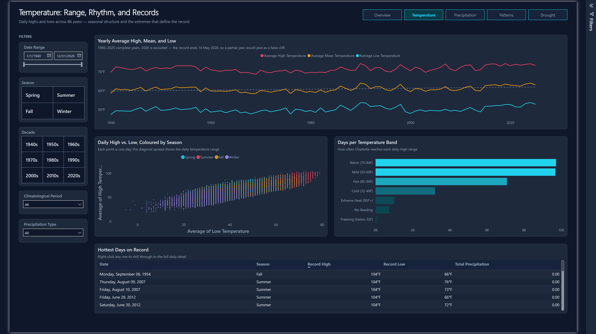
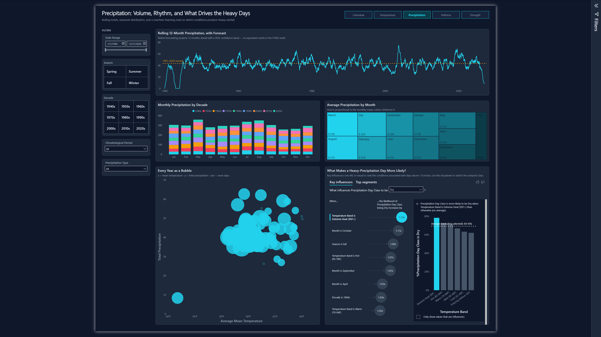
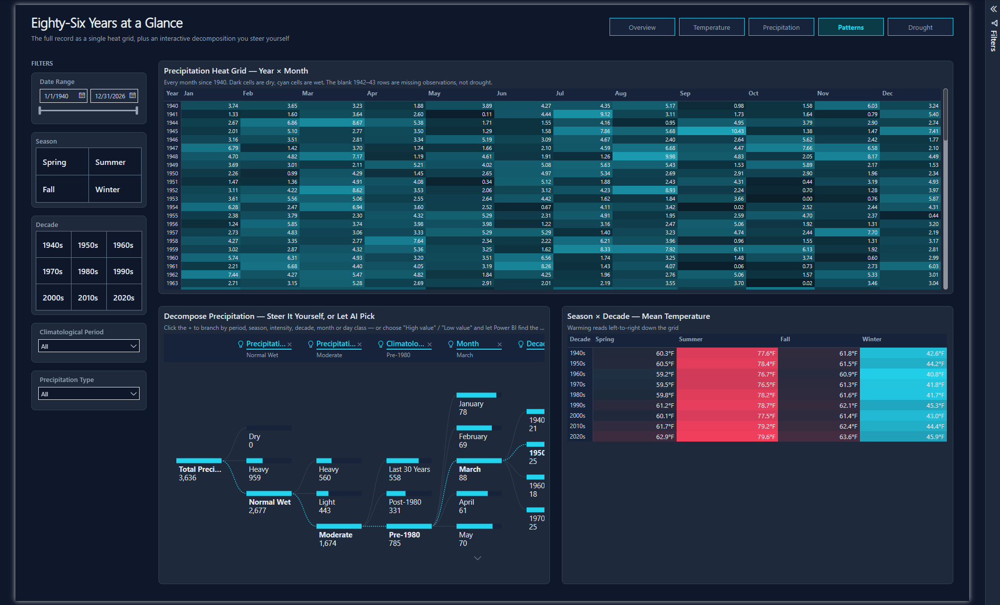
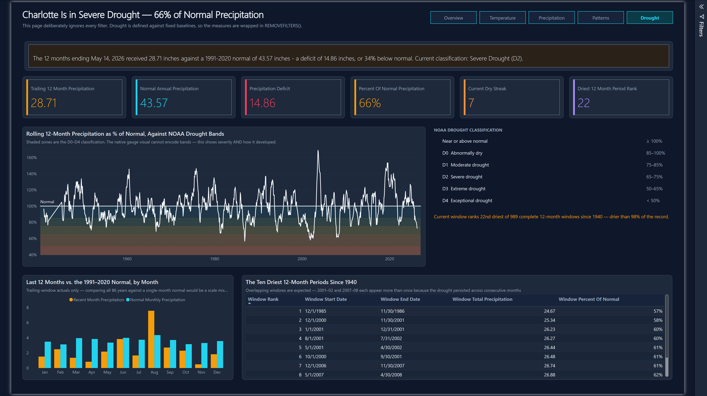
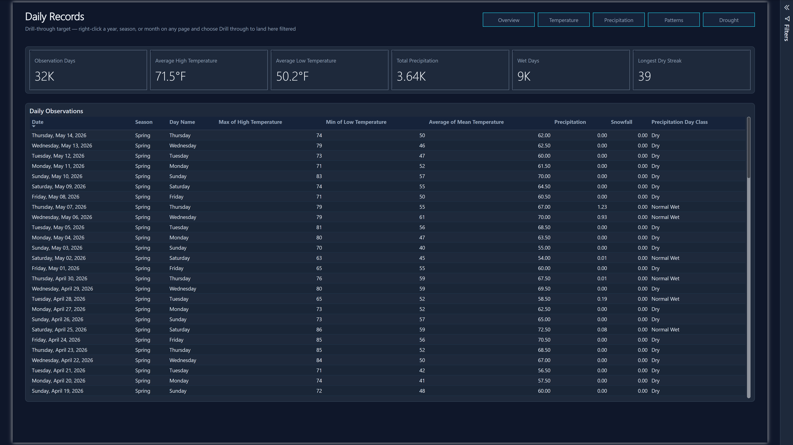

The Power BI authoring skills (planning, semantic modeling, design, and PBIR report authoring) used to build a Charlotte weather dashboard including a real semantic model, DAX measures, 6 pages, and 25 visualizations, built entirely through Claude Code rather than dragging filters, visuals, and fields onto a canvas.
A challenge I gave to Claude Code and Codex to see which would build the better one-shot weather-related dashboard, sourcing data from NOAA and using React, Tailwind, Recharts, Plotly, and D3. The Claude version became the design brief for this Power BI rebuild, and it is the build referred to throughout this page. Since a finished Power BI report can't be embedded in a web page, this is the full walkthrough.

The original JavaScript dashboards were built in a single shot. The Power BI version deliberately was not - report visuals bind to a semantic model, so if the model is wrong, every visual gets rebuilt. The work was sequenced to match that dependency, and each stage used a different authoring skill.
A spec first, not a literal port: which of original filters survive, what visuals need to be replaced, and what does Power BI simply do better.
A flat JSON file became a star schema - a real marked Date table, a daily fact table, and the derived values the JavaScript computed at render time rewritten as DAX.
A dark theme carried over from the original palette so both builds read as one system, with color assigned by meaning rather than by chart.
Pages written as PBIR JSON by a deterministic Node generator, validated by CLI, then verified against real screenshots from Power BI Desktop.
The original javascript dashboards were taken as the reference design to see how much Claude Code could replicate using the Power BI Report Skills authored by Microsoft.
This is where the project had to succeed first. The source data was a flat array of daily records with no date dimension - fine for JavaScript, which can just loop over it. Power BI needs structure.
DAX has no ordered-window primitive, so consecutive-run logic uses the date-minus-rank technique: for any unbroken run of days, date minus dense rank is constant, which turns "find consecutive runs" into "group by that constant".
VAR _DryDays = FILTER( CALCULATETABLE( SUMMARIZE('Observation', [Date], [Precipitation]) ), NOT ISBLANK([Precipitation]) && [Precipitation] < 0.01 ) VAR _Ranked = ADDCOLUMNS(_DryDays, "@Grp", INT([Date]) - RANKX(_DryDays, INT([Date]), , ASC, DENSE)) VAR _Streaks = GROUPBY(_Ranked, [@Grp], "@Len", COUNTX(CURRENTGROUP(), 1)) RETURN MAXX(_Streaks, [@Len])
The grouping worked on the first attempt. The semantics did not. In DAX,
BLANK() < 0.01 evaluates to TRUE - so the 1942–43 gap, where NOAA recorded
no precipitation at all, was counted as a 365-day drought. The
NOT ISBLANK guard is the fix.
This is the failure mode worth internalizing: it produced a chart that rendered perfectly and was completely wrong. No validator catches that.
Profiling the source before modeling turned up two things that changed the design:
1942–43 have no readings at all for high, low, precipitation or snow - 730 rows.
The original JavaScript coalesces prcp || 0, which silently plots those two
years as near-zero precipitation - indistinguishable from a historic drought. The
model keeps blanks blank, so lines break instead of diving to zero.
The mean-temperature fallback is not redundant. NOAA's reported daily mean covers
only 10.5% of rows, in two disjoint bands: 1942–43 and 1998–2005. The documented fallback of
(high + low) / 2 cannot fill 1942–43, because those are exactly the years
missing high and low. The two sources are complementary, so mean temperature is a computed
column coalescing both - the only form that recovers all three cases.
Ranking the current 12-month window against every other window on record started as a query-time iteration over ~1,030 overlapping windows: 41.6 seconds, and wrong. Windows overlapping the 1942–43 gap and the empty 2026 tail ranked as "driest" when they were merely unmeasured.
Requiring complete daily coverage fixed the correctness bug. Moving the computation into a calculated table evaluated at refresh took it to 12 milliseconds.
The corrected answer: the current window ranks 22nd driest of 989 - drier than 98% of the record. The first, broken version reported rank 1.
Modern Power BI projects can be saved as PBIP - a folder of plain-text JSON and TMDL that lives in git and diffs like source. That makes the whole report programmable.
All six pages are emitted by a single Node script - 127 visual containers in total, once the shapes, textboxes and navigation buttons that make up the page furniture are counted alongside the charts. Every page, visual, binding and formatting rule is defined once in code and written out as PBIR JSON.
Page and visual IDs are SHA-derived from stable seeds, so re-running the generator produces an empty diff unless the design actually changed. That property is what makes a companion drift check meaningful: any difference is a real edit, never churn.
The payoff is consistency that would be tedious by hand - a 232px slicer rail, 8px grid snapping, and an identical title band on every page, all guaranteed by construction rather than by careful clicking.
Because the whole report is plain text on disk, it can be read back and documented without anyone writing a spec by hand. Running the finished PBIP through NeonScribe - my custom documentation generator for BI reports - produces a complete technical reference: every page's layout, every filter, every visual and its field bindings, plus the underlying data model.
It is the same argument as the page generator, pointed the other way. The page generator turns a design contract into PBIR; the documentation turns PBIR back into a readable account of what was built - so the docs can never drift from the report they describe.
| Report planningRequirements, spec, translation judgments | powerbi-report-planning |
| Semantic model authoringTables, relationships and DAX as TMDL | semantic-model-authoring |
| Report designTheme, palette and layout contract | powerbi-report-design |
| Report authoringPBIR page and visual mechanics | powerbi-report-authoring |
| ValidationSchema, bindings, enums, layout bounds | powerbi-report-author |
| Desktop bridgeReload and screenshot for visual verification | powerbi-desktop |
The PBIR validator passed clean while the report still had ten real defects. Every one was caught by looking at rendered screenshots, and none was detectable statically. The most instructive:
| Defect | Why it slipped through |
|---|---|
| Actual vs. normal at incomparable scales | "Actual" summed all 86 Januaries (304") against a single-month normal (3.48"), so the normal bars were invisible slivers. The chart rendered perfectly and compared two quantities that were never comparable. |
| Tile slicer captions rendered blank | Styling the label with an id selector validates cleanly and silently blanks the text. |
| Navigation strip rendered empty | The built-in page navigator validated clean through four attempts and displayed nothing. Replaced with explicit buttons carrying page-navigation links. |
| 2026 plotted as a dramatic cliff | 134 days of a partial year on a per-year axis. Fixed with a visual-level filter to complete years only. |
| Tables showed meaningless totals | Table visuals sum every numeric column by default - including ranks, temperatures and percentages. |
Three separate defects shared one root cause: a formatting object that validates cleanly and silently renders nothing. Screenshot verification is the only thing that catches that class of bug.
Six pages - five in the navigation, plus a hidden drill-through target. Every screenshot is the live report rendered in Power BI Desktop with all 31,545 rows loaded.
The landing page, built to land one argument in the title itself: Charlotte has warmed 2.9°F since the mid-century baseline.
Range, rhythm and records - the seasonal structure of the record and the extremes that define it.

Volume, rhythm, and a machine-learning read on which conditions actually produce heavy rainfall.

The full record as a single heat grid, plus a decomposition tree the reader steers themselves.

The page that makes the argument: Charlotte is in severe drought at 66% of normal precipitation.

REMOVEFILTERS() - belt and bracesA sixth page that never appears in the navigation - you arrive here by right-clicking something else.

Drill-through is the capability with no JavaScript counterpart in the original build. Every aggregate in the report is a summary of specific days, and this page makes those days reachable in two clicks from anywhere - without a single line of routing code, and without ever loading 31,545 rows into a browser.
The same 31,545 records rendered - first in JavaScript dashboards built by Claude Code and Codex, then as this Power BI report - in tools with genuinely different strengths. Neither version is simply better.